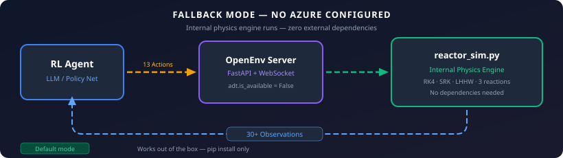
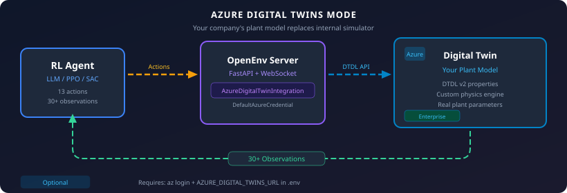

Azure Digital Twins Integration Guide
Connect your existing Azure Digital Twin instance to the Methanol APC Environment for training RL agents on your specific plant model.
Overview
The integration is fully optional. By default, the environment uses its internal
physics engine (reactor_sim.py). When you connect an Azure Digital Twin, it replaces
or supplements the internal simulator with your company's plant-specific model.


Prerequisites
You need these only if you choose to use Azure Digital Twins:
| Requirement | Purpose |
|---|---|
| Azure subscription | Hosts the Digital Twin instance |
| Azure Digital Twins instance | Your plant model lives here |
Azure CLI (az) |
Authentication via az login |
| Python packages | azure-digitaltwins-core, azure-identity |
The default internal simulation mode requires none of these.
Step-by-Step Setup
1. Install Azure packages
2. Create an Azure Digital Twins instance
# Create resource group
az group create --name methanol-apc-rg --location eastus
# Create Azure Digital Twins instance
az dt create --dt-name methanol-apc-adt --resource-group methanol-apc-rg
# Get the instance URL
az dt show --dt-name methanol-apc-adt --query "hostName" -o tsv
# Output: methanol-apc-adt.api.eus.digitaltwins.azure.net
3. Assign yourself as owner
# Get your Azure AD user object ID
USER_ID=$(az ad signed-in-user show --query id -o tsv)
# Assign "Azure Digital Twins Data Owner" role
az dt role-assignment create \
--dt-name methanol-apc-adt \
--assignee $USER_ID \
--role "Azure Digital Twins Data Owner"
4. Upload the DTDL model
The environment provides a ready-made DTDL model definition:
from methanol_apc_env.cheme_bridge import AzureDigitalTwinBridge
# Export the DTDL model JSON
bridge = AzureDigitalTwinBridge()
dtdl_model = bridge.export_dtdl_model()
import json
with open("methanol_reactor.json", "w") as f:
json.dump([dtdl_model], f, indent=2)
Upload it:
5. Create a twin instance
az dt twin create \
--dt-name methanol-apc-adt \
--dtmi "dtmi:openenv:MethanolReactor;1" \
--twin-id "methanol-reactor-001" \
--properties '{
"temperature": 250.0,
"pressure": 80.0,
"catalystHealth": 1.0,
"feedRateH2": 5.0,
"feedRateCO": 2.5,
"coolingWaterFlow": 40.0,
"coolingWaterTemp": 25.0,
"compressorPower": 65.0,
"emergencyShutdown": false
}'
6. Configure the environment
Add to your .env file (never commit this):
7. Authenticate
That's it. DefaultAzureCredential will automatically use your az login session.
8. Use in code
from methanol_apc_env.cheme_bridge import AzureDigitalTwinBridge
# Connect (reads AZURE_DIGITAL_TWINS_URL from environment)
adt = AzureDigitalTwinBridge()
if adt.is_available:
print("Connected to Azure Digital Twins!")
# Read twin state
state = adt.get_twin_state("methanol-reactor-001")
print(f"Temperature: {state.get('temperature')}°C")
# Push an agent action to the twin
adt.push_action("methanol-reactor-001", {
"feed_rate_h2": 5.5,
"cooling_water_flow": 45.0,
})
# Sync twin state into a ReactorState object
from methanol_apc_env.server.reactor_sim import ReactorState
reactor = ReactorState()
adt.sync_to_reactor_state("methanol-reactor-001", reactor)
print(f"Synced: T={reactor.temperature}°C, P={reactor.pressure} bar")
else:
print("Azure DT not configured — using internal simulator")
Authentication Methods
DefaultAzureCredential tries these in order — use whichever fits your setup:
| Method | When to Use | Setup |
|---|---|---|
| Azure CLI | Local development | az login |
| VS Code | Developing in VS Code | Sign into Azure extension |
| Managed Identity | Production on Azure | Enable MI on VM/Container App |
| Service Principal | CI/CD pipelines | Set AZURE_CLIENT_ID + AZURE_TENANT_ID + AZURE_CLIENT_SECRET env vars |
Important: Never commit credentials. Use .env (in .gitignore) or Azure Key Vault.
DTDL Model Schema
The MethanolReactor twin model maps directly to the environment's ReactorState:
| DTDL Property | Type | ReactorState Field | Unit |
|---|---|---|---|
temperature |
double | temperature |
°C |
pressure |
double | pressure |
bar |
catalystHealth |
double | catalyst_health |
0–1 |
methanolProduced |
double | methanol_produced |
kg |
reactionRate |
double | reaction_rate |
mol/s |
feedRateH2 |
double | feed_rate_h2 |
mol/s |
feedRateCO |
double | feed_rate_co |
mol/s |
coolingWaterFlow |
double | cooling_water_flow |
L/min |
coolingWaterTemp |
double | cooling_water_temp |
°C |
compressorPower |
double | compressor_power |
kW |
cumulativeProfit |
double | cumulative_profit |
$ |
h2CoRatio |
double | h2_co_ratio |
— |
emergencyShutdown |
boolean | emergency_shutdown |
— |
Model ID: dtmi:openenv:MethanolReactor;1
Architecture
Cost Estimate
| Resource | Cost (approx.) |
|---|---|
| Azure Digital Twins | ~$0.025 per 1000 operations |
| Training run (10K steps) | ~$0.25 |
| Azure CLI / SDK | Free |
For development/testing, the internal simulator is free and requires no Azure resources.
Troubleshooting
| Issue | Solution |
|---|---|
ModuleNotFoundError: azure |
pip install azure-digitaltwins-core azure-identity |
DefaultAzureCredential failed |
Run az login or check service principal env vars |
Twin not found |
Verify twin ID with az dt twin show --dt-name <name> --twin-id <id> |
Permission denied |
Assign "Azure Digital Twins Data Owner" role to your user |
Connection timeout |
Check AZURE_DIGITAL_TWINS_URL matches your instance hostname |